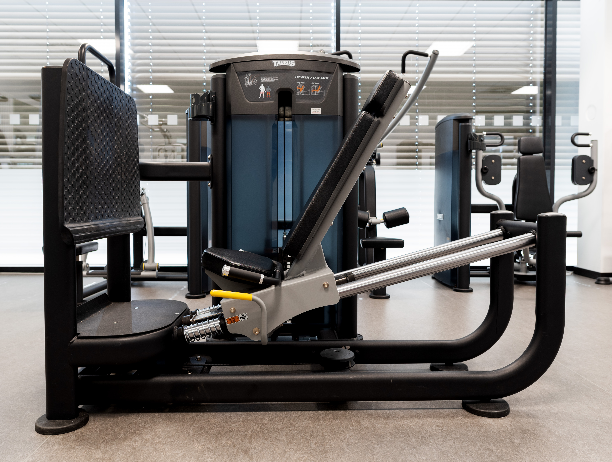

Übungenunser 5Days to Fitnessplan
Beinpresse
Auf der Maschine sitzend werden die Beine auf die Fußplatte aufgesetzt. Die Füße sind dabei ungefähr Hüftbreit auseinander, die Zehenspitzen schauen leicht zur Seite. Der Sitz wird mit Hilfe des gelben Hebels so eingestellt, dass der Winkel im Kniegelenk etwas kleiner als 90 Grad ist. Um die Position im Sitz zu fixieren kann man sich an den Griffen fixieren. Bei der Durchführung wird nun Kraft auf den Fersenbereich des Fußes aufgebaut und der Sitz nach hinten weggedrückt. Eine maximale Streckung des Kniegelenks ist dabei in jedem Fall zu vermeiden, die Beine werden also nicht komplett durchgedrückt!

×